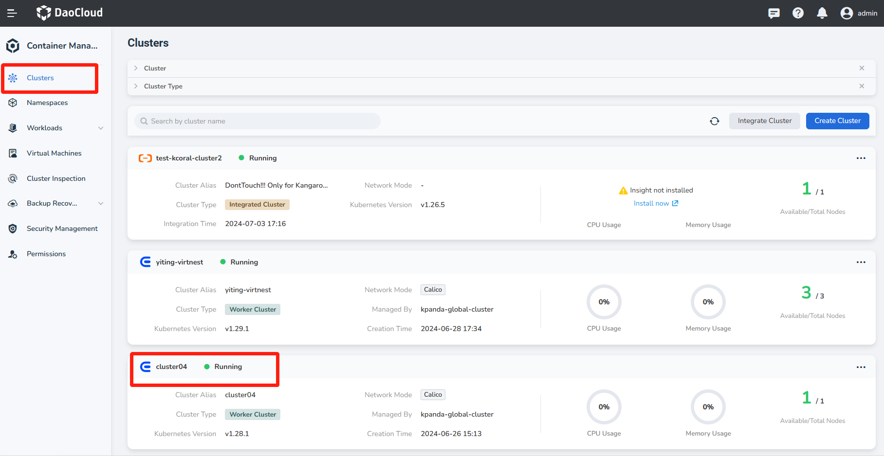
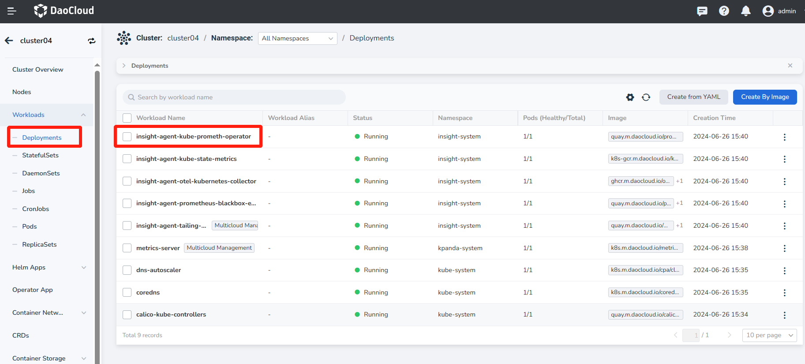
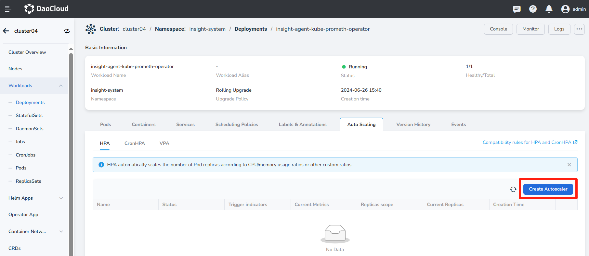
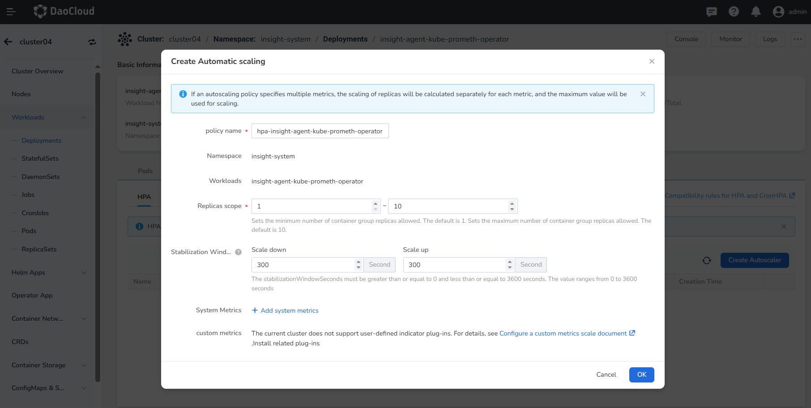

Creating HPA Based on Custom Metrics¶
When the built-in CPU and memory metrics in the system do not meet your business needs, you can add custom metrics by configuring ServiceMonitoring and achieve auto-scaling based on these custom metrics. This article will introduce how to configure auto-scaling for workloads based on custom metrics.
Note
- HPA is only applicable to Deployment and StatefulSet, and each workload can only create one HPA.
- If both built-in metrics and multiple custom metrics are used, HPA will calculate the required number of scaled replicas based on multiple metrics respectively, and take the larger value (but not exceeding the maximum number of replicas configured when setting the HPA policy) for scaling.
Prerequisites¶
Before configuring the custom metrics auto-scaling policy for workloads, the following prerequisites must be met:
- Integrated Kubernetes cluster or created Kubernetes cluster, and able to access the cluster's UI interface.
- Completed creation of a namespace, deployment, or statefulSet.
- The current user should have permissions higher than NS Editor. For details, refer to namespace authorization.
- metrics-server plugin has been installed.
- insight-agent plugin has been installed.
- Prometheus-adapter plugin has been installed.
Steps¶
Refer to the following steps to configure the auto-scaling policy based on metrics for workloads.
-
Click Clusters in the left navigation bar to enter the clusters page. Click a cluster name to enter the Cluster Overview page.

-
On the Cluster Details page, click Workloads in the left navigation bar to enter the workload list, and click a workload name to enter the Workload Details page.

-
Click the Auto Scaling tab to view the current autoscaling configuration of the cluster.

-
Confirm that the cluster has installed metrics-server, Insight, and Prometheus-adapter plugins, and that the plugins are running normally, then click the Create AutoScaler button.
Note
If the related plugins are not installed or the plugins are in an abnormal state, you will not be able to see the entry for creating custom metrics auto-scaling on the page.

-
Create custom metrics auto-scaling policy parameters.
- Policy Name: Enter the name of the auto-scaling policy. Note that the name can be up to 63 characters long, can only contain lowercase letters, numbers, and separators ("-"), and must start and end with a lowercase letter or number, e.g., hpa-my-dep.
- Namespace: The namespace where the workload is located.
- Workload: The workload object that performs auto-scaling.
- Resource Type: The type of custom metric being monitored, including Pod and Service types.
- Metric: The name of the custom metric created using ServiceMonitoring or the name of the system-built custom metric.
- Data Type: The method used to calculate the metric value, including target value and target average value. When the resource type is Pod, only the target average value can be used.
Operation Example¶
This case takes a Golang business program as an example. The example program exposes the
httpserver_requests_total metric and records HTTP requests. This metric can be used to
calculate the QPS value of the business program.
Deploy Business Program¶
Use Deployment to deploy the business program:
apiVersion: apps/v1
kind: Deployment
metadata:
name: httpserver
namespace: httpserver
spec:
replicas: 1
selector:
matchLabels:
app: httpserver
template:
metadata:
labels:
app: httpserver
spec:
containers:
- name: httpserver
image: registry.imroc.cc/test/httpserver:custom-metrics
imagePullPolicy: Always
---
apiVersion: v1
kind: Service
metadata:
name: httpserver
namespace: httpserver
labels:
app: httpserver
annotations:
prometheus.io/scrape: "true"
prometheus.io/path: "/metrics"
prometheus.io/port: "http"
spec:
type: ClusterIP
ports:
- port: 80
protocol: TCP
name: http
selector:
app: httpserver
Prometheus Collects Business Monitoring¶
If the insight-agent is installed, Prometheus can be configured by creating a ServiceMonitor CRD object.
Operation steps: In Cluster Details -> Custom Resources, search for “servicemonitors.monitoring.coreos.com", click the name to enter the details. Create the following example CRD in the httpserver namespace via YAML:
apiVersion: monitoring.coreos.com/v1
kind: ServiceMonitor
metadata:
name: httpserver
namespace: httpserver
labels:
operator.insight.io/managed-by: insight
spec:
endpoints:
- port: http
interval: 5s
namespaceSelector:
matchNames:
- httpserver
selector:
matchLabels:
app: httpserver
Note
If Prometheus is installed via insight, the serviceMonitor must be labeled with
operator.insight.io/managed-by: insight. If installed by other means, this label is not required.
Configure Metric Rules in Prometheus-adapter¶
steps: In Clusters -> Helm Apps, search for “prometheus-adapter",enter the update page through the action bar, and configure custom metrics in YAML as follows:
rules:
custom:
- metricsQuery: sum(rate(<<.Series>>{<<.LabelMatchers>>}[1m])) by (<<.GroupBy>>)
name:
as: httpserver_requests_qps
matches: httpserver_requests_total
resources:
template: <<.Resource>>
seriesQuery: httpserver_requests_total
Create Custom Metrics Auto-scaling Policy Parameters¶
Follow the above steps to find the application httpserver in the Deployment and create auto-scaling via custom metrics.